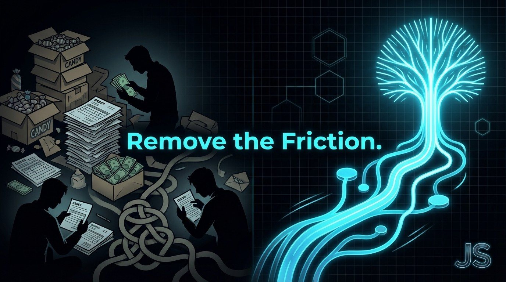
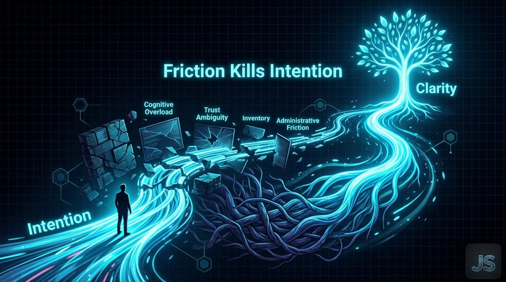
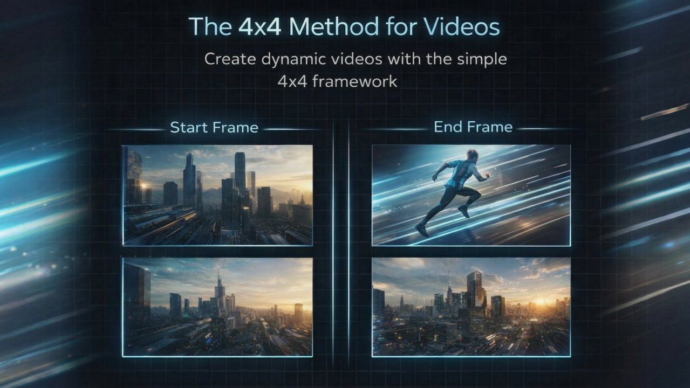

The Creative Shift March 3, 2026
Part I: Where Roots Take Hold
Why TreeRaise Had to Exist

Most fundraising starts with products, bake sales, and catalogs.
Then volunteers show up. Hours are logged. Money is counted. Inventory is stored. Orders are tracked. Bake goods are bundled. Envelopes are managed. Weeks go by. Volunteers burn out. Supporters disengage.
That pattern reveals a deeper truth:
Fundraising has been rooted in physical friction.
You get how many moving parts? But what people actually want is a flow, a giving experience that feels easy, meaningful, and aligned with their values.
TreeRaise was built to solve exactly that.
Fundraising Shouldn’t Be a Marathon Through Obstacles
For decades, schools and organizations leaned on product sales to raise funds.
Candy bars. Wrapping paper. Chocolates. Cookie dough.
Each item required:
Volunteers counting inventory
Parents selling to adults
Families storing boxes at home
Boards coordinating deliveries and pick-ups
Everybody helps.
Everybody gets tired.
And many give up.
There had to be a better way.
See content credentials
The Real Problem Is Friction, Not Generosity
People are generous by nature.
What stops them is process friction.
Traditional fundraisers ask people to:
Buy products they do not need
Sell to neighbors who may not want to buy
Manage orders, payments, deliveries
Track money, count invoices, sort sales
This turns giving into administrative labor.
What most systems design for is transaction complexity. What real donors respond to is clarity of impact.
TreeRaise Was Built Around Behavioral Flow
Instead of product catalogs and overworked volunteers, TreeRaise asks one thing:
Share a link.
From that link:
Supporters give directly
Trees get planted
Impact is GPS verified
Donations are tracked in real time
No inventory. No counting. No delivery hassles
The system removes the chaos of traditional fundraising and replaces it with a smooth flow of generosity.
See content credentials

A Fundraiser With Deep Roots, Not Tangled Paths
When you plant a tree, you do not see the roots immediately.
But beneath the surface, they spread and strengthen.
Friction in fundraising is like tangled roots.
Too many moving parts. No clear paths. Effort that goes nowhere.
TreeRaise designs paths the way roots grow:
Purposefully. Efficiently. With direction.
The goal is not good intentions. The goal is actual impact.
The New Model, Behavior Meets Nature
Branding at TreeRaise is not about logos.
It is about creating a giving experience that reduces mental load and ties identity to meaning:
Clarity of impact. Transparency you can see. Participation you can share.
Trees symbolize growth, depth, and connected systems: exactly what modern fundraisers need.
One for the Road
If your next fundraiser still asks people to buy, sell, count, track, and haul products, you are asking them to do work before they give.
Generosity does not want more labor.
It wants flow.
When you remove friction and root your system in meaning, giving becomes natural, not forced.
Next week, we will go behind the scenes into how we reverse benchmarked the industry, deconstructing traditional flows so we could build funding flows that actually work.
The Creative Shift continues.
If you're working through a brand or growth challenge, this is how I engage.
Connect with me here:

Want this kind of thinking on your brand?
The Creative Shift is the thinking behind the client work. Book a call, or read the original on LinkedIn.